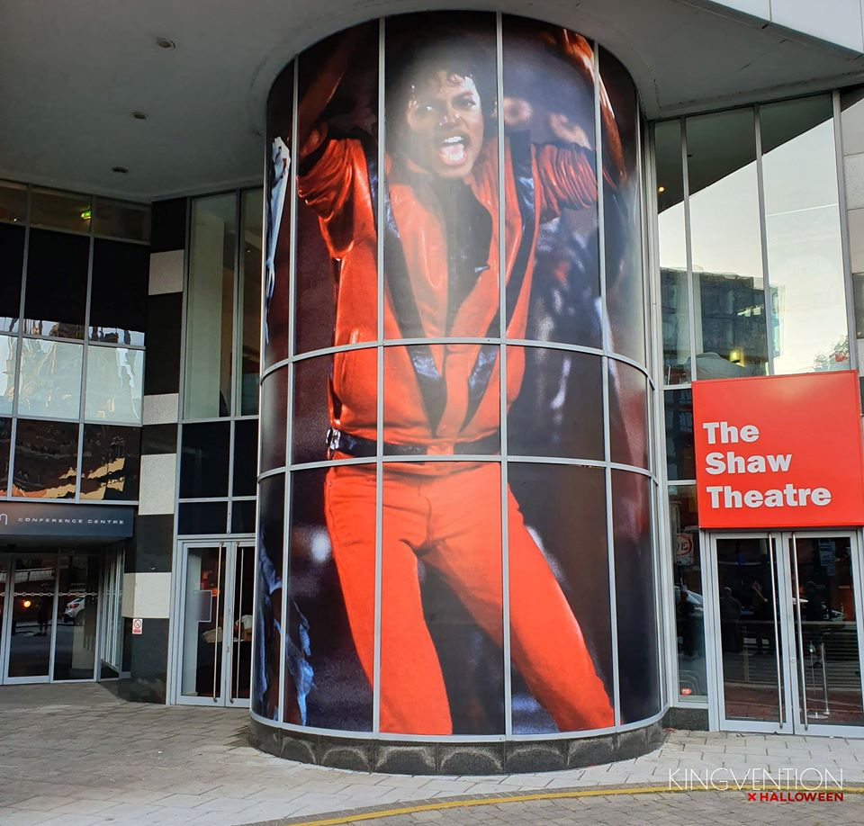

Todas as perguntas do enunciado, com a indicação de onde cada uma é
respondida. Serve para navegar, mas sobretudo para verificar que nenhuma
pergunta ficou sem resposta.
Como está organizado
Mapa do trabalho
Cada pergunta do enunciado aponta para o capítulo que a responde. O mapa
garante que nenhuma ficou sem resposta nem isolada.
Em três linhas
A Pessoa é formada pela cultura e torna-se agente de mudança.
A Cultura dá o repertório e recebe formatos novos.
A Comunidade transforma a obra em gesto e devolve-a em legado.
A PessoaA Cultura

A Comunidade
Mapa completo
Pergunta por pergunta
Clique numa resposta para abrir o capítulo.
Nota de leitura
Como ler o mapa
O enunciado pede relações, não uma biografia.
1 · Contexto primeiro
Sem a cultura, a pessoa parece uma lista de datas.
2 · Ligar ao social
Cada resposta termina com uma ponte para o efeito comunitário.
3 · Fechar o ciclo
A conclusão volta ao modelo e às opiniões do grupo.